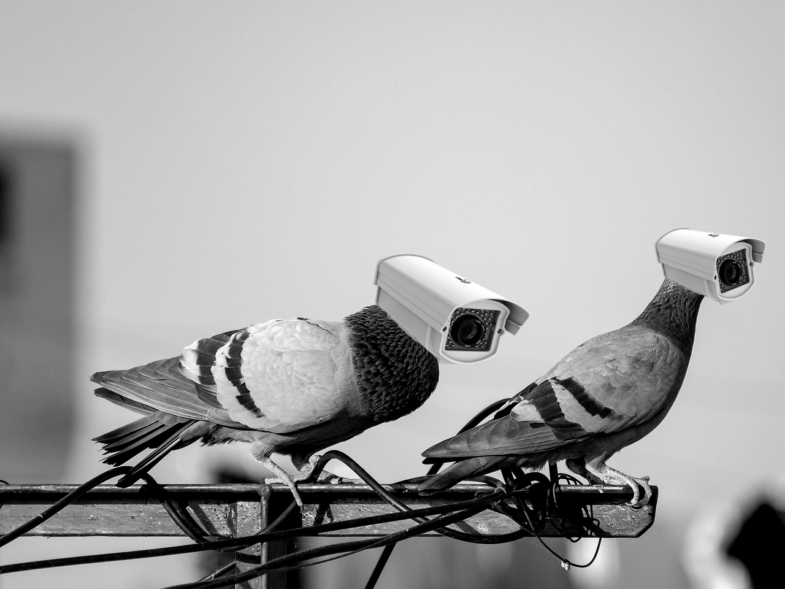

Les pigeons ne sont pas des oiseaux
La nouvelle circulait sous le manteau, mais nos récents clichés anti-holographiques ne laissent plus place au doute. Ce que vous prenez pour un volatile maladroit cherchant une miette de pain est en réalité...
LIRE LA SUITE →

Pourquoi il pleut (toujours) pendant vos vacances ?
Nous avons tous vécu ce scénario absurde : une semaine de bureau sous un soleil radieux, suivie d’un déluge systématique dès le samedi matin. Là où le citoyen lambda peste contre la « malchance »
LIRE LA SUITE →
Dorothée était un agent de la C.I.A
La nouvelle aurait pu rester encore longtemps secrète si un de nos informateurs, dont nous taierons la source, ne nous avait pas informé sur un complot
LIRE LA SUITE →